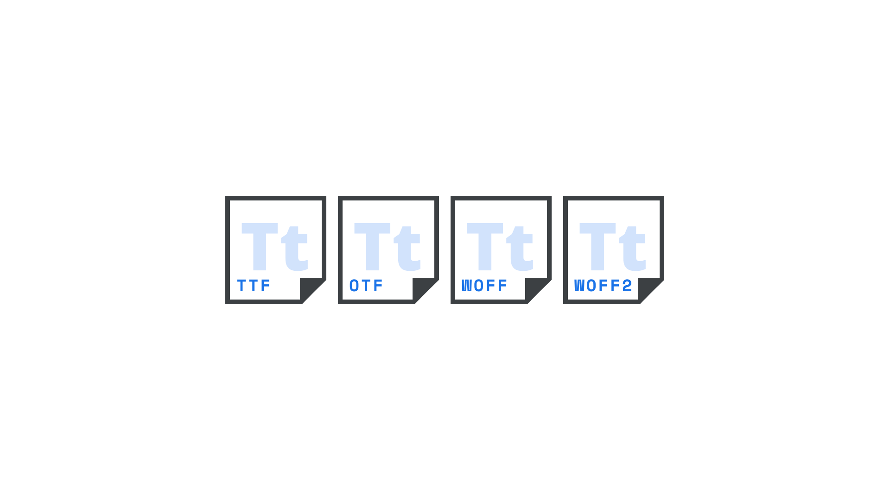

Font format
By Google Fonts Knowledge contributors · Google Fonts Knowledge.
Original article · Source on GitHub · CC BY-SA 4.0. Text, illustrations and existing credits reproduced from the licensed Knowledge repository. Open Shelf adapted the layout and links; these adaptations are also CC BY-SA 4.0. No endorsement implied.
A font format is a specific file type(s) designated to hold font data, with a font itself being the manifestation of a typeface. In other words, for a typeface to be used, it first has to exist as a font.

OpenType is the standard font format in common use. There are two subformats: TrueType (with the extension of .ttf) and CFF (.otf). Both can be variable (although for CFF, only in CFF v2). Both can be converted losslessly (using free tools) into web fonts; i.e., WOFF (Web Open Font Format, .woff) or WOFF2 (Web Open Font Format v2, .woff2). The WOFF and WOFF2 formats are widely supported in browsers.